Adventure Design
uart 통신으로 조종가능한 아두이노 비눗방울 장난감 자동차: 박지원 이유진 양창민
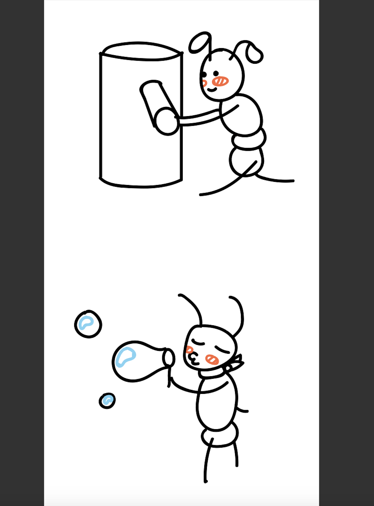
결과물의 모습
{kind=link}
{kind=link}
{kind=link}
꼬마아이를 위한 아두이노 장난감- 첫번째 시도: 빙글빙글 돌아가며 비눗방울 불어주는 로봇
원래 하고 싶었던 것은 이것이었습니다.

이것을 만들기 위해서 캔의 내부를 설계하고, 설계한대로 아크릴판을 잘라서 제작에 들어갔습니다.
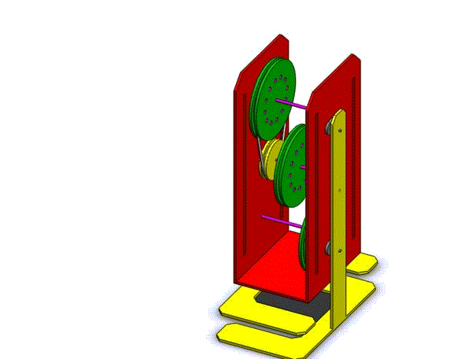아크릴도면은 어도비 일러스트레이터로 만들었고, 사용할 캔의 사이즈에 맞추어 설계했습니다.커팅은 학교 오픈랩에서 했습니다.
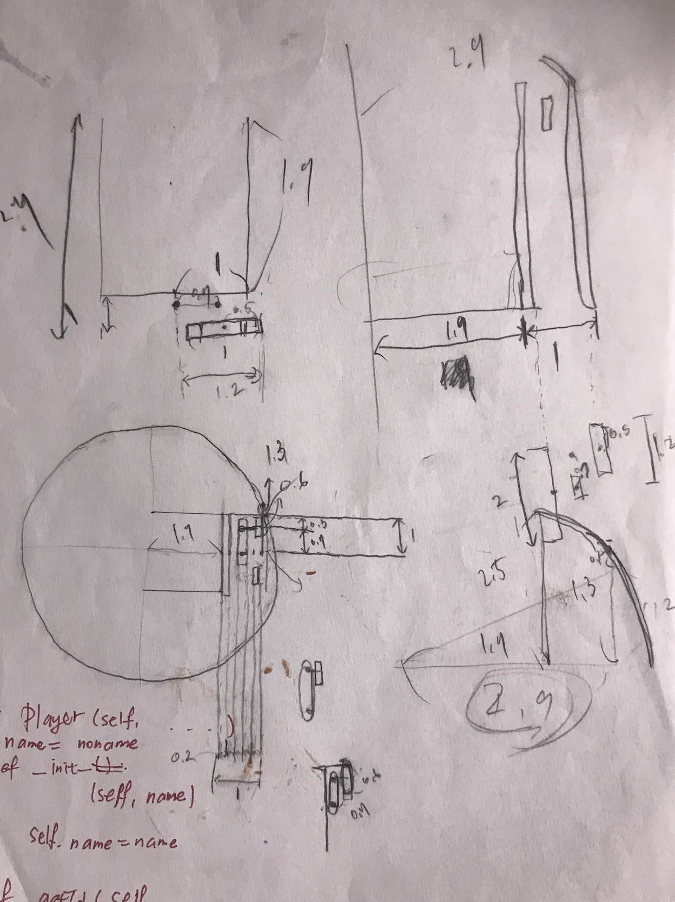 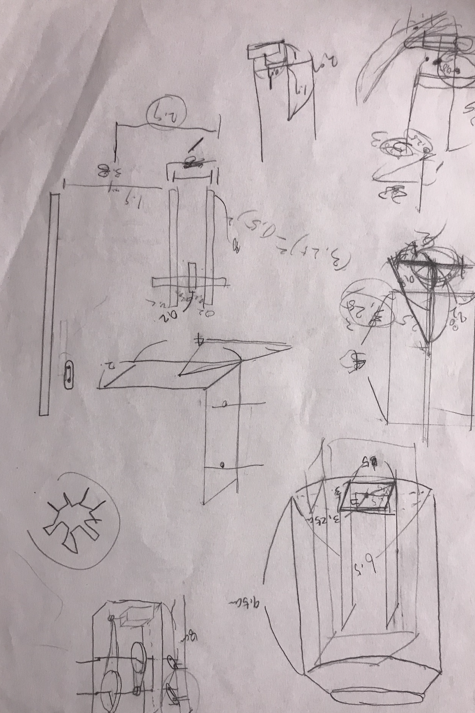 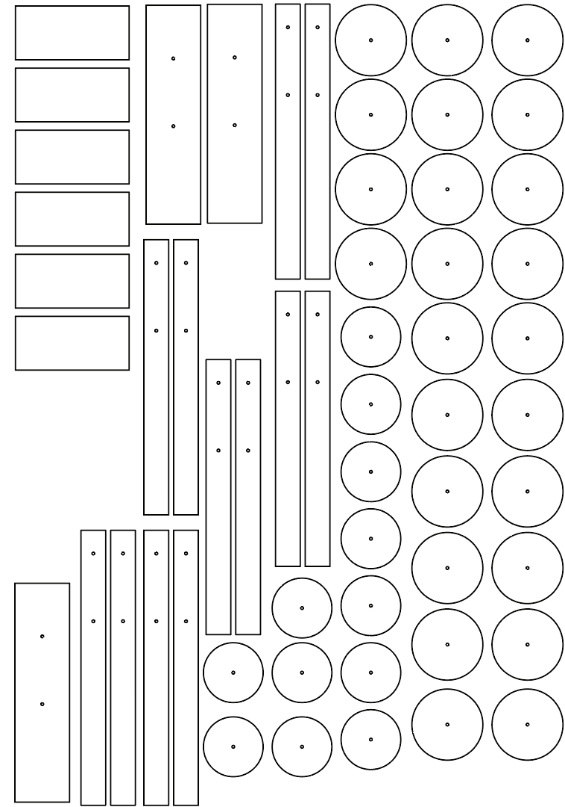 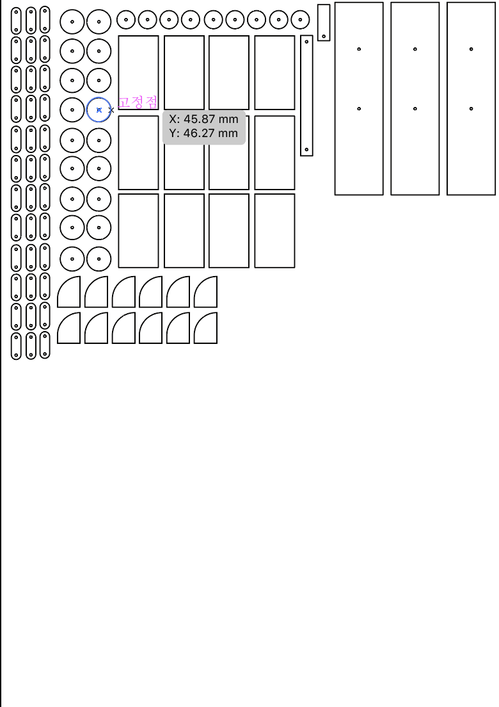그 후 자른 아크릴판을 가지고 몸체를 제작하려...고 애를 썼습니다.
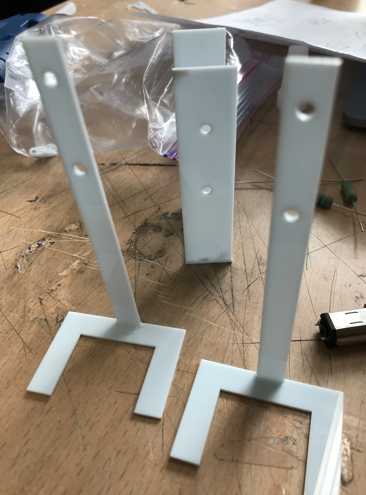 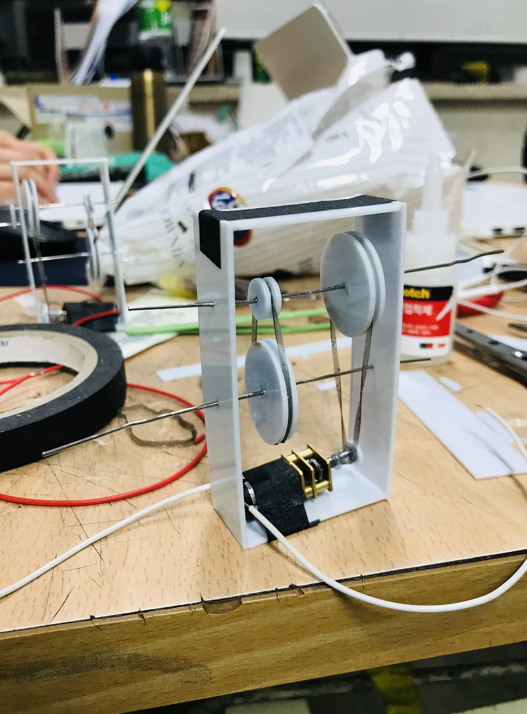본체를 위한 코딩-1.적외선 on/off
적외선 스위치로 장난감을 켜고 끄기 위해서 적외선 스위치를 썼습니다.
#include
#include
#include
#include
int RECV_PIN = A0;
IRrecv irrecv(RECV_PIN); //수신객체생성
decode_results results; //값 저장되는 클래스 객체 이름 선언
void setup()
{
irrecv.enableIRIn(); // 수신 시작
pinMode(4, OUTPUT);
pinMode(5, OUTPUT);
}
void loop() {
if (irrecv.decode(&results)) {
switch (results.value) {
case 0xFF6897: digitalWrite(12, HIGH); break;//0버튼이 눌리면 LED ON
case 0xFF30CF: digitalWrite(12, LOW); break;//1버튼이 눌리면 LED OFF
}
irrecv.resume(); // Receive the next value
}
}
본체를 위한 코딩-2.L298N 모듈
L298N 모듈은 PWM 제어를 사용해서 아두이노에서 모터의 속도를 제어할 수 있는 모듈입니다.총 4개의 디지털 아웃풋, 2개의 아날로그 아웃풋 단자를 갖고 있는 모듈입니다.
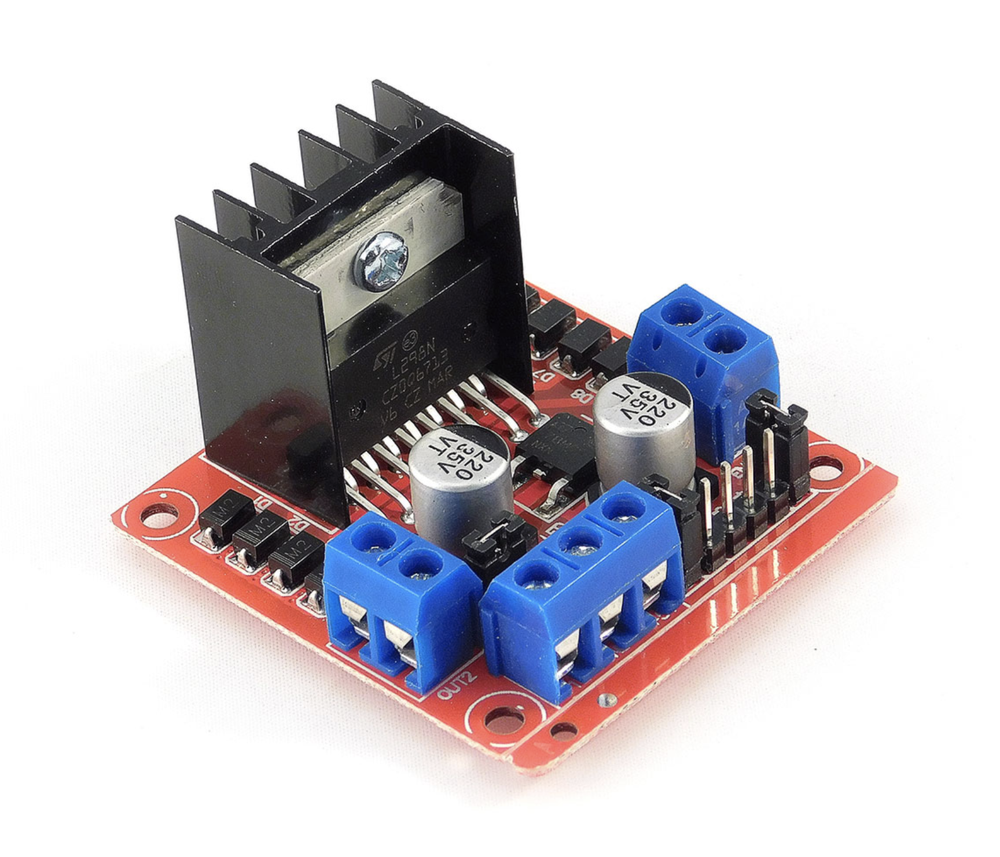
#define ENA 10
#define ENB 5
#define EN1 9
#define EN2 8
#define EN3 7
#define EN4 6
int Motor_speed=100;
void setup()
{
pinMode(ENA,OUTPUT);
pinMode(ENB,OUTPUT);
pinMode(EN1,OUTPUT);
pinMode(EN2,OUTPUT);
pinMode(EN3,OUTPUT);
pinMode(EN4,OUTPUT);
}
void loop()
{
// 모터 A,B 정방향
digitalWrite(EN1, HIGH);
digitalWrite(EN2, LOW);
analogWrite(ENA, 100);
digitalWrite(EN3, HIGH);
digitalWrite(EN4, LOW);
analogWrite(ENB, 200);
}
실패의 과정
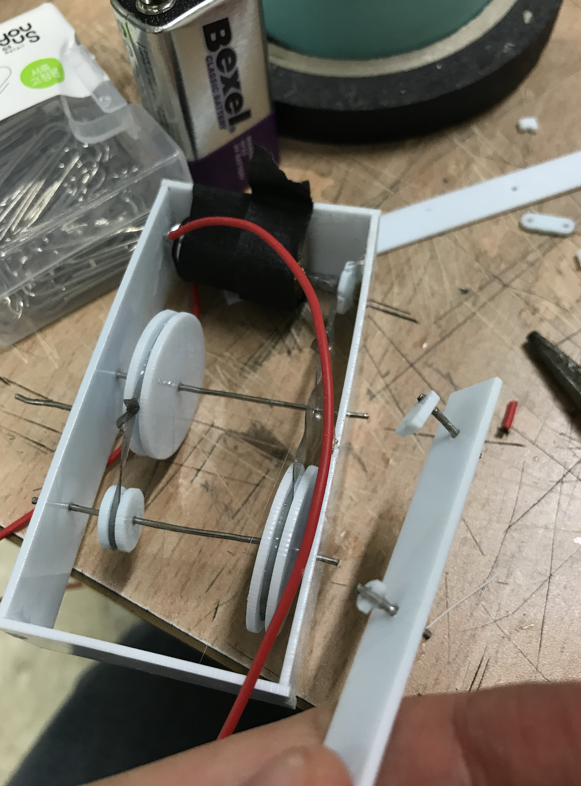
본격적으로 본체를 만들었는데, 아무리 만들어도 개미의 본체를 완성할 수 없었습니다. 아크릴판이 너무 얇아서 쉽게 부러졌고, 단단하게 고정할 수도 없었으며 만든다고 해도 너무 뒤뚱뒤뚱 걸어서 우리가 생각하는 그런 모습이 나올 것 같지 않았습니다. (아무리 많이 만들어도 계속 부러짐...) 모터에서 고무줄을 통해 기어로 회전을 전달하는 구조였는데, 고무줄이 자꾸 헛돌았습니다.
계획 변경
그래서 빙글빙글 돌아가는 비눗방울 장난감은 만드는 것을 포기하고, 그래도 어린이를 위한 아두이노 장난감이라는 컨셉트는 살려 조종가능한 비눗방울 자동차를 만들기로 결정했습니다.
무선으로 조종해서 비눗방울을 뿜으면서 나가는 자동차로 계획을 변경하고, 적절한 통신 방법을 모색했습니다. wifi 통신, bluetooth, 적외선 통신 등을 테스트해봤습니다.
하지만 아두이노 wifi 를 제가 사용하는 맥에서 연결하는 것이 쉽지 않았고, 블루투스 모듈도 고장났는지 아무리 AT를 쳐도 연결이 되지 않았습니다.
그래서 적외선 리모콘을 사용해서 제작하던 중 IR receiver를 반대로 꽂아서 쇼트가 났는지 엄청나게 뜨거워지면서 소자가 먹통이 되는 일이 발생했습니다.
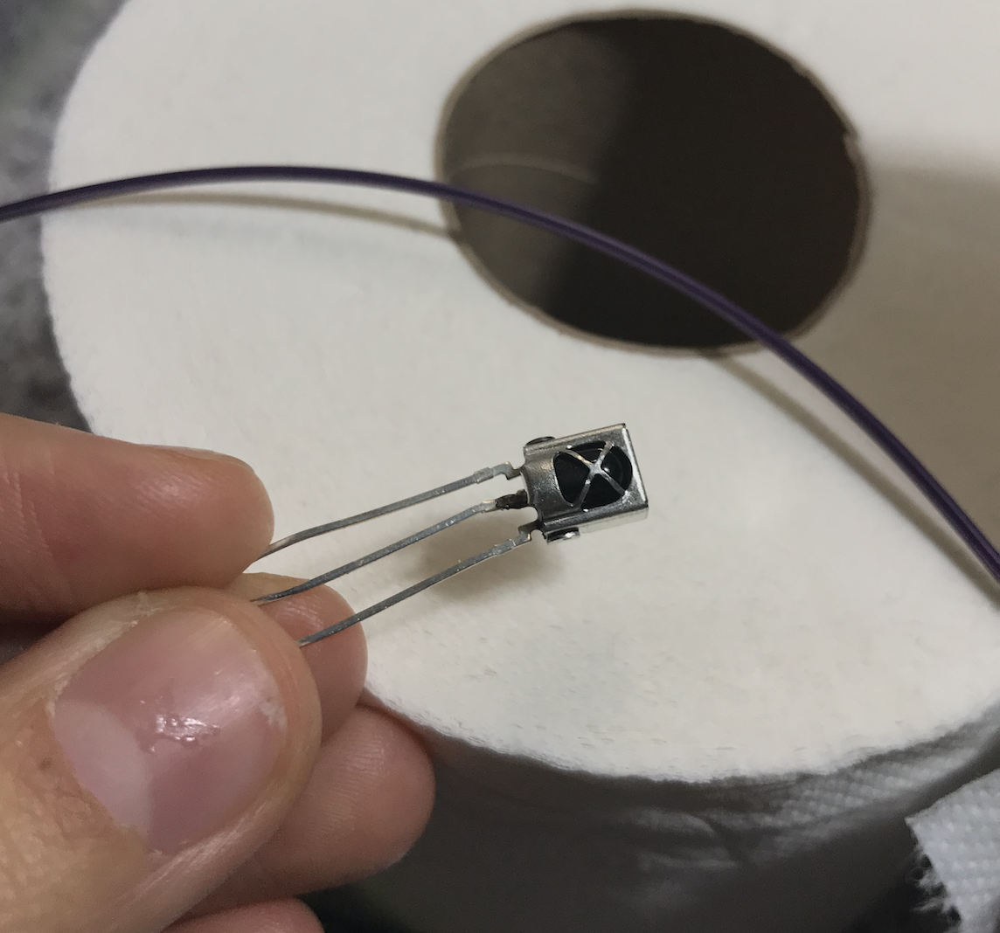안녕, 하나뿐인 내 소자야...
비눗방울 자동차 제작
무선 통신이 잘 되지 않아서, 유선통신으로 하기로 했습니다. 아두이노를 두 대 써서 uart 통신으로 조종했습니다. uart통신은 병렬 데이터를 직렬로 전환해 데이터를 전송하는 방식으로, MCU 에서 흔히 쓰이는 통신 방식입니다. SoftwareSerial이라는 클래스를 사용하고, 앞에 선언한 핀을 rx로, 뒤에 선언한 핀을 tx로 사용하겠다고 선언합니다.
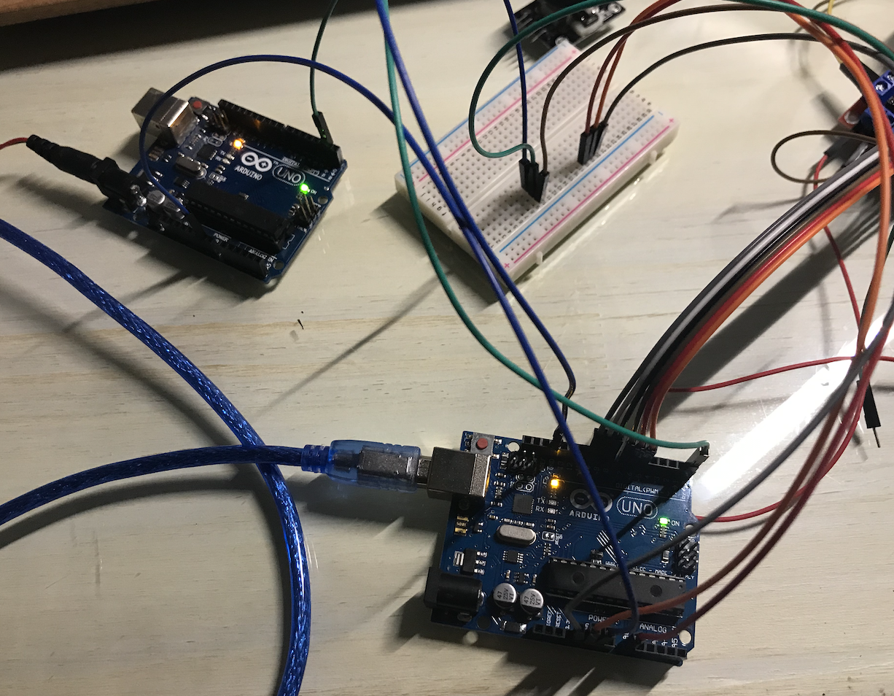본격적으로 차체 제작에 다시 들어갔습니다. 처음에는 작은 모터를 썼는데, 힘이 너무 딸려서 도저히 그 많은걸 이고 지고 달릴 수 있을 것 같지 않았습니다.
너무 느리게 굴러가는 힘없는 모터...

배터리를 두 개 달아보긴 했는데, 그래도 힘이 모자라서 다른 모터를 써서 차체를 제작했습니다.
차체 만들 때 가장 골머리를 썩였던 부분은, 모터가 계속 한쪽만 돈다는 것이었습니다. 모터 문제인지, 모듈 문제인지, 코드 문제인지 알기 위해 이것저것 많이 해보았습니다. 결론적으로는 같이 작성한 서보 모터 관련 코드가 문제였습니다. 서보를 선언만 해도 모터 드라이버가 한쪽만 작동했습니다.
조종은 조이스틱으로 했습니다. 처음에는
speed_right = 650 + 3*(64 - direction);
speed_left = 650 - 3*(64 - direction);
이런 식으로 조이스틱의 각도에 따라서 속도를 조절하려고 했는데, uart통신은 시리얼 통신이라 그렇게 많은 정보를 보낼 수가 없었습니다. x축 y축 각도 두 개를 보내는 것도 까다로워서, 그냥 송신부 아두이노에서 조이스틱의 방향을 전/후/좌/우 판단해서 숫자 하나만 보내는 것으로 코딩했습니다.
if (x_axis>700 && y_axis >400 && y_axis<600){
sendValue=1; //좌회전
}
else if (y_axis>700 && x_axis >400 && x_axis<600){
sendValue=2; //후진
}
else if (x_axis<300 && y_axis >400 && y_axis<600){
sendValue=3; //우회전
}
else if (y_axis<700 && x_axis >400 && x_axis<600){
sendValue=4; //전진
}
비눗방울 부분과 소리 부분
비눗방울 제조기(DC모터)와 서보모터, 그리고 피에조 스피커를 외부전압 2개와 모터 모듈을 아두이노에 얹어서 만들었습니다. 비눗방울 제조기(DC모터)에 송풍기와 흡입기 둘 다 연결되어있어서 비눗물 흡입과 동시에 송풍기 쪽에 전달해주어서 비눗방울을 만들어냅니다. 스위치를 모듈에 연결시켜서 전원을 켤 수 있도록 만들었습니다
처음에는 비눗물이 쭐쭐 나오고 전혀 거품이 안 생겨서 매우 곤욕스러웠지만 가변저을 달아서 돌려보면서 적정한 전류를 찾으니 이렇게 비눗방울이 잘 나오게 되었습니다.
베짱이 부분
처음 구상했던 베짱이의 기어 모델이다. 이 기어를 이용하여 베짱이가 위아래로 움직일 수 있도록 만들기로 계획했다. 레이저 커팅을 이용하여 아크릴 판을 자르고 기어를 만들어 DC 모터에 달아 실현해보았다. 맨 처음 구상한 기어는 설치가 어렵고, 모터 힘이 너무 세서 가벼운 깡통이 버티지 못했다. 그래서 다른 방법을 이용하기로 했다. 일단 위아래로 움직이던 베짱이의 움직임을 좌우로 움직이는 것으로 바꿨고, 모터는 서보모터를 이용하기로 했다. 캔 뒷부분을 열어 기어가 잘 돌아가는지 확인하고 조립하였다
하지만 이후 아두이노에 서보모터 모터드라이버 피에조 부저를 다 달았더니 동작하지 않아서 서보모터를 뺐다.


수신부/송신부 코드
//송신부
#include
SoftwareSerial BTSerial(2,3);
int sendValue;
int flag=0;
void setup(){
Serial.begin(9600); // serial 9600 으로 통신 할거다.
BTSerial.begin(9600); // BTSerial을 9600으로 통신 할거다.
pinMode(8, INPUT_PULLUP);
}
//
void loop(){
int x_axis=analogRead(A1);
int y_axis=analogRead(A0);
int z_value=digitalRead(8);
Serial.println(sendValue);
if(z_value==0 && flag==0){
flag=1;
delay(100);
}
else if(z_value==0 && flag==1){
flag=0;
sendValue=0;
delay(100);
}
if(flag==1){
if (x_axis>700 && y_axis >400 && y_axis<600){
sendValue=1; //좌회전
}
else if (y_axis>700 && x_axis >400 && x_axis<600){
sendValue=2; //후진
}
else if (x_axis<300 && y_axis >400 && y_axis<600){
sendValue=3; //우회전
}
else if (y_axis<700 && x_axis >400 && x_axis<600){
sendValue=4; //전진
}
}
BTSerial.write(sendValue);
delay(100);
}
수신부
//수신부
#include
#include
SoftwareSerial BTSerial(2,3);
#define ENA 10
#define ENB 5
#define EN1 9
#define EN2 8
#define EN3 7
#define EN4 6
int state;
int pos = 0;
Servo servo_11;
void setup(){
Serial.begin(9600);
BTSerial.begin(9600);
servo_11.attach(11);
pinMode(ENA,OUTPUT);
pinMode(ENB,OUTPUT);
pinMode(EN1,OUTPUT);
pinMode(EN2,OUTPUT);
pinMode(EN3,OUTPUT);
pinMode(EN4,OUTPUT);
}
//
void loop(){
Serial.println(state);
if(BTSerial.available()){
state=BTSerial.read();
int speed_right = 1200;
int speed_left = 1200;
if(state==1){ //좌회전
digitalWrite(EN1, HIGH);
digitalWrite(EN2, LOW);
analogWrite(ENA,80);
digitalWrite(EN3, HIGH);
digitalWrite(EN4, LOW);
analogWrite(ENB, 200);
}
else if(state==2){ //후진
digitalWrite(EN1, LOW);
digitalWrite(EN2, HIGH);
analogWrite(ENA,speed_right);
digitalWrite(EN3, LOW);
digitalWrite(EN4, HIGH);
analogWrite(ENB, speed_left);
}
else if(state==3){ //좌회전
digitalWrite(EN1, HIGH);
digitalWrite(EN2, LOW);
analogWrite(ENA,200);
digitalWrite(EN3, HIGH);
digitalWrite(EN4, LOW);
analogWrite(ENB, 80);
}
else if(state==4){ //전진
digitalWrite(EN1, HIGH);
digitalWrite(EN2, LOW);
analogWrite(ENA,speed_right);
digitalWrite(EN3, HIGH);
digitalWrite(EN4, LOW);
analogWrite(ENB, speed_left);
}
else if(state==0){ //전진
digitalWrite(EN1, LOW);
digitalWrite(EN2, LOW);
digitalWrite(EN3, LOW);
digitalWrite(EN4, LOW);
}
}
}
버블건 코드
#include
int in1 = 13;
int in2 = 12;
int an1 = 11;
int buttonState = 0;
int lastButtonState = 0;
int buttonPushCounter = 0;
int pos = 0;
Servo servo_9;
int speakerPin = 6;
int length = 70;
String notes[] = {"G4","G4", "G4", "D#4/Eb4", "A#4/Bb4", "G4", "D#4/Eb4","A#4/Bb4", "G4", "D5", "D5", "D5", "D#5/Eb5", "A#4/Bb4", "F#4/Gb4", "D#4/Eb4","A#4/Bb4", "G4", "G5","G4","G4","G5","F#5/Gb5", "F5","E5","D#5/Eb5","E5", "rest", "G4", "rest","C#5/Db5","C5","B4","A#4/Bb4","A4","A#4/Bb4", "rest", "D#4/Eb4", "rest", "F#4/Gb4", "D#4/Eb4","A#4/Bb4", "G4" ,"D#4/Eb4","A#4/Bb4", "G4"};
int beats[] = { 8, 8, 8, 6, 2, 8, 6 , 2 ,16 , 8, 8, 8, 6, 2, 8, 6, 2, 16,8,6,2,8,6,2,2, 2, 2,6,2,2,8,6,2,2,2,2,6,2,2,9,6,2,8,6,2,16 };
int tempo = 50;
void playTone(int tone, int duration) {
for (long i = 0; i < duration * 1000L; i += tone * 2) {
digitalWrite(speakerPin, HIGH);
delayMicroseconds(tone);
digitalWrite(speakerPin, LOW);
delayMicroseconds(tone);
}
}
void playNote(String note, int duration) {
String noteNames[] = { "D#4/Eb4", "E4", "F4", "F#4/Gb4", "G4", "G#4/Ab4", "A4", "A#4/Bb4", "B4", "C5", "C#5/Db5", "D5", "D#5/Eb5", "E5", "F5", "F#5/Gb5", "G5", "G#5/Ab5", "A5", "A#5/Bb5", "B5", "C6", "C#6/Db6", "D6", "D#6/Eb6", "E6", "F6", "F#6/Gb6", "G6" };
int tones[] = { 1607, 1516, 1431, 1351, 1275, 1203, 1136, 1072, 1012, 955, 901, 851, 803, 758, 715, 675, 637, 601, 568, 536, 506, 477, 450, 425, 401, 379, 357, 337, 318 };
for (int i = 0; i < 29; i++) {
if (noteNames[i] == note) {
playTone(tones[i], duration);
}
}
}
void setup()
{
pinMode(in1, OUTPUT);
pinMode(in2, OUTPUT);
pinMode(an1, OUTPUT);
pinMode(8, INPUT);
analogWrite(an1, 255);
servo_9.attach(9);
pinMode(speakerPin, OUTPUT);
}
void loop()
{
buttonState = digitalRead(8);
if (buttonState != lastButtonState) {
if (buttonState == HIGH) {
buttonPushCounter += 1;
} else {
}
}
lastButtonState = buttonState;
if (buttonPushCounter % 2 == 0) {
digitalWrite(in1, HIGH);
digitalWrite(in2, LOW);
for (pos = 0; pos <= 180; pos += 1) {
servo_9.write(pos);
}
delay(100);
for (pos = 180; pos >= 0; pos -= 1) {
servo_9.write(pos);
}
delay(100);
for (int i = 0; i < length; i++) {
if (notes[i] == "rest") {
delay(beats[i] * tempo);
}
else {
playNote(notes[i], beats[i] * tempo);
}
delay(tempo / 2);
}
}
else {
digitalWrite(in1, LOW);
digitalWrite(in2, LOW);
}
}